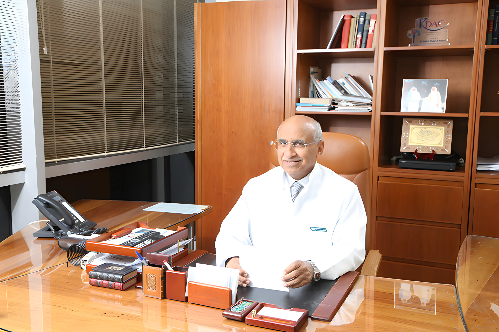
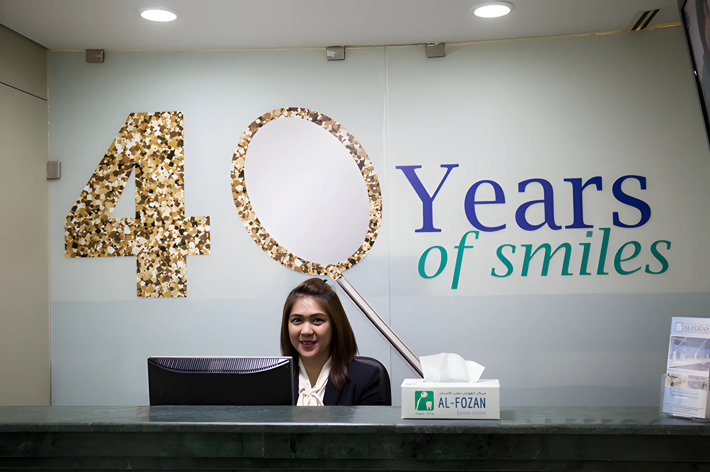

Since1976
Al Fozan Dental Centre began as the first private dental clinic in Kuwait. This is where it came from, where it is now, and who you will see when you come in.

The first private clinic
In 1976 Dr. Faisal Al Fozan opened Al Fozan Dental Clinic, the first private dental clinic in Kuwait. It kept up with dentistry as it changed, and grew into Al Fozan Dental Centre.

The centre today
The centre is equipped for examination, treatment, X-rays and laboratory work, with a team of specialist dentists. We look after teeth and gums for the whole family, from a child's first check-up to implants and dentures.
You will find us on the 7th floor of Al-Andalus Complex, Beirut Street, Hawally. Appointments on 1801033.

Forty years of smiles, then fifty
In 2016 we marked forty years with "40 Years of Smiles" across the reception and the frontage, and a thank-you to our patients in Arabic and English: نفخر باختياركم لنا لأجيال عديدة, we take pride in being your choice for many generations.
2026 is our fiftieth year.
Who you will see
| Doctor | Title |
|---|---|
| Dr. Faisal Al Fozan | Founder and general manager |
| Dr. Tahani Al Musallam | Consultant Orthodontist |
| Dr. Ehsan Eldaraa | Consultant Prosthodontist |
| Dr. Fidel Nabbout | Specialist Orthodontist |
| Dr. Antonio Abou Najm | Specialist Orthodontist |
| Dr. Boutros Ghanem | Specialist Endodontist |
| Dr. Elie Rahme | Specialist Prosthodontist |
| Dr. Suheir Kalaoui | Specialist Prosthodontist |
| Dr. Maram Zebian | Registered Orthodontist |
| Dr. Esa Al Khair | General Dentist |
| Dr. Rana Al Koukash | General Dentist |
| Dr. Rani Al Khateeb | General Dentist |
| Dr. George Kayal | General Dentist |